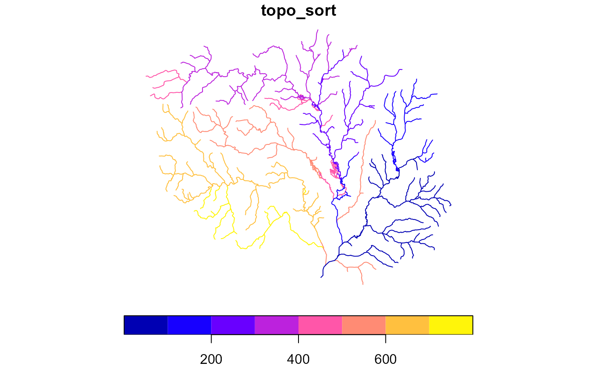

given a network with an id and and toid, returns a sorted and potentially split set of output.
Can also be used as a very fast implementation of upstream with tributaries navigation. The full network from each outlet is returned in sorted order.
If a network includes diversions, all flowlines downstream of
the diversion are visited prior to continuing upstream. See
note on the outlets parameter for implications of this
implementation detail.
Usage
sort_network(x, split = FALSE, outlets = NULL)
# S3 method for class 'data.frame'
sort_network(x, split = FALSE, outlets = NULL)
# S3 method for class 'hy'
sort_network(x, split = FALSE, outlets = NULL)Arguments
- x
data.frame network compatible with hydroloom_names.
- split
logical if TRUE, the result will be split into independent networks identified by the id of their outlet. The outlet id of each independent network is added as a "terminalid" attribute.
- outlets
same as id in x. if specified, only the network emanating from these outlets will be considered and returned. NOTE: If outlets does not include all outlets from a given network containing diversions, a partial network may be returned.
Value
data.frame containing a topologically sorted version of the requested network and optionally a terminal id.
Examples
x <- sf::read_sf(system.file("extdata/new_hope.gpkg", package = "hydroloom"))
g <- add_toids(x)
head(g <- sort_network(g))
#> Simple feature collection with 6 features and 36 fields
#> Geometry type: MULTILINESTRING
#> Dimension: XY
#> Bounding box: xmin: 1505349 ymin: 1554873 xmax: 1508920 ymax: 1558708
#> Projected CRS: +proj=aea +lat_0=23 +lon_0=-96 +lat_1=29.5 +lat_2=45.5 +x_0=0 +y_0=0 +ellps=GRS80 +towgs84=0,0,0,0,0,0,0 +units=m +no_defs
#> # A tibble: 6 × 37
#> COMID toid GNIS_ID GNIS_NAME LENGTHKM REACHCODE WBAREACOMI FTYPE FCODE
#> <int> <dbl> <chr> <chr> <dbl> <chr> <int> <chr> <int>
#> 1 8898302 8896658 "983820" "Cub Creek" 0.182 03030002… 8894960 Arti… 55800
#> 2 8896658 8896656 "983820" "Cub Creek" 1.37 03030002… 0 Stre… 46003
#> 3 8896656 8896624 "983820" "Cub Creek" 2.64 03030002… 0 Stre… 46006
#> 4 8896664 8896624 " " " " 1.64 03030002… 0 Stre… 46003
#> 5 8896624 8896570 "983820" "Cub Creek" 1.17 03030002… 0 Stre… 46006
#> 6 8896572 8896570 " " " " 1.77 03030002… 0 Stre… 46003
#> # ℹ 28 more variables: StreamLeve <int>, StreamOrde <int>, StreamCalc <int>,
#> # ToNode <dbl>, Hydroseq <dbl>, LevelPathI <dbl>, Pathlength <dbl>,
#> # TerminalPa <dbl>, ArbolateSu <dbl>, Divergence <int>, StartFlag <int>,
#> # TerminalFl <int>, DnLevel <int>, UpLevelPat <dbl>, UpHydroseq <dbl>,
#> # DnLevelPat <dbl>, DnMinorHyd <dbl>, DnDrainCou <int>, DnHydroseq <dbl>,
#> # FromMeas <dbl>, ToMeas <dbl>, RtnDiv <int>, VPUIn <int>, VPUOut <int>,
#> # AreaSqKM <dbl>, TotDASqKM <dbl>, FromNode <dbl>, …
g$topo_sort <- nrow(g):1
plot(g['topo_sort'])

g <- add_toids(x, return_dendritic = FALSE)
g <- sort_network(g)
g$topo_sort <- nrow(g):1
plot(g['topo_sort'])